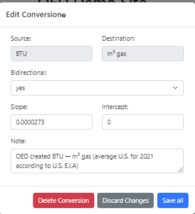

OED Documentation
Conversion Editing
Version V1.0.0
Documentation overview
Admin documentation
Information
Site Management
Data Acquisition
Site Installation
User documentation
Documentation versions for this page
These features are only available to select people who oversee the OED site (called admins) so this information is not usually of interest to a general user.
Overview
The admin conversion editing popup, shown in the following figure, allows admin users to edit a conversion that already exists on an OED site. It is accessed from the admin conversion viewing page by clicking the "Edit Conversion" button at the bottom of any conversion card. Further information on conversions is available and this page assumes you understand about conversions. 
All information shown on this page is based upon the documentation example.
Usage
As shown in the figure above, the following information can be viewed/entered:
- Source. This shows the source unit of the conversion. It cannot be changed. There is the option to create a new conversion and/or delete this one if desired.
- Destination. This shows the destination unit of the conversion. It cannot be changed. There is the option to create a new conversion and/or delete this one if desired.
- Bidirectional. This dropdown menu can be "yes" or "no". "yes" indicates the conversion is bidirectional and goes in both directions and "no" indicates the conversion is unidirectional and only goes from the source to destination. OED will automatically invert a bidirectional conversion to the other direction with the correct values. The current choice will be shown when the pop up is opened. Care should be taken in changing this as it can have other indirect effects due to chained conversions.
- Slope. This inputs the slope of the conversion from the source to destination. The current value is shown when the pop up is opened. The last digit cannot be deleted from this input field when typing in a number so care should be taken in entering values. Note that you can select the entire field and then enter new values by typing.
- Intercept. This inputs the intercept of the conversion from the source to destination. The current value is shown when the pop up is opened. Input is similar to slope.
- Note. This allows input of additional information about the conversion that one wants to store. The current value is shown when the pop up is opened.
The following buttons are available at the bottom of the popup:
- "Delete Conversion" allows one to remove this conversion from the site. Care should be taken in doing this as it can have other indirect effects due to chained conversions.
- "Discard Changes" allows one to leave the pop up, discard all the information entered and return to the meter viewing page. If one clicks off the edit conversion popup to close it then the next time it is opened the changes made will still be present unless discard is used.
- "Save all" permanently stores all the changes made to the conversion. If no changes were made then clicking this only closes the popup. When certain types of changes are made to conversions then OED needs to take additional steps that can change significant information in the system. This happens because conversions control what is allowed to be graphed. As a result, OED will refresh the web browser page and return you back to the main OED page. This will clear all meters, groups and other choices made for graphing but is necessary because some of those choices may now be invalid.
The "Discard Changes" and "Save all" buttons at the bottom of the popup are similar. However, clicking outside the popup but within the OED web browser window will retain the values entered if you click on the edit button again without leaving the conversion page. The "Delete Conversion" button will remove this conversion but will warn with a popup before doing this as shown in the following figure. 
Click "Cancel" to stop the delete and "Delete Conversion" to delete it.
Details
Saving a conversion requires a change to the OED database that necessitates a refresh of the web browser window to show the admin the updated information. As a result, all the currently selected meters/groups/language, etc. will be lost and the page shown will be the main OED graphic page. OED plans to eliminate the need for doing this in the future so one would remain on the units page.